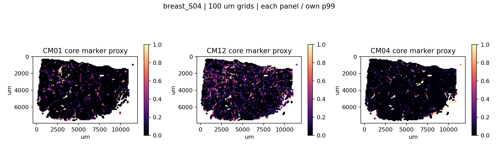
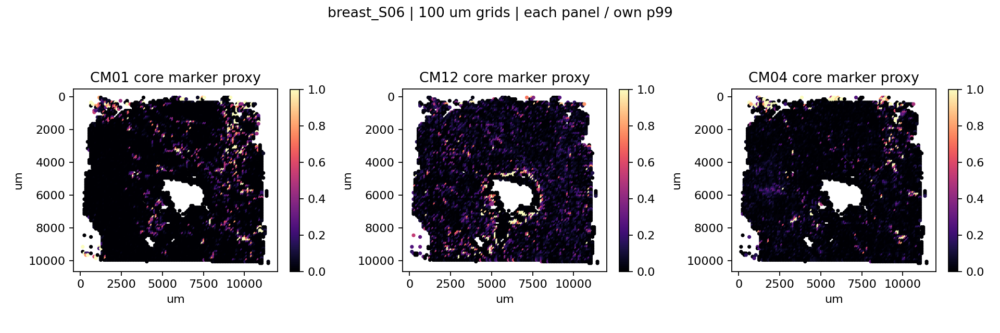
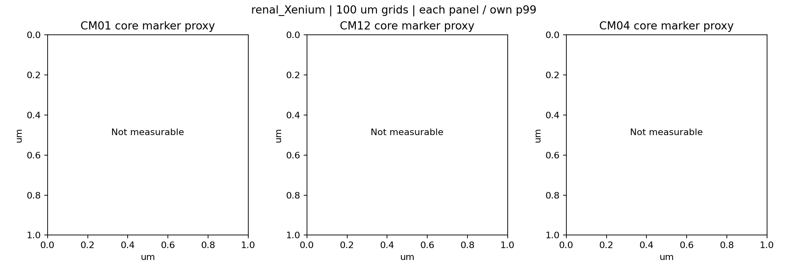
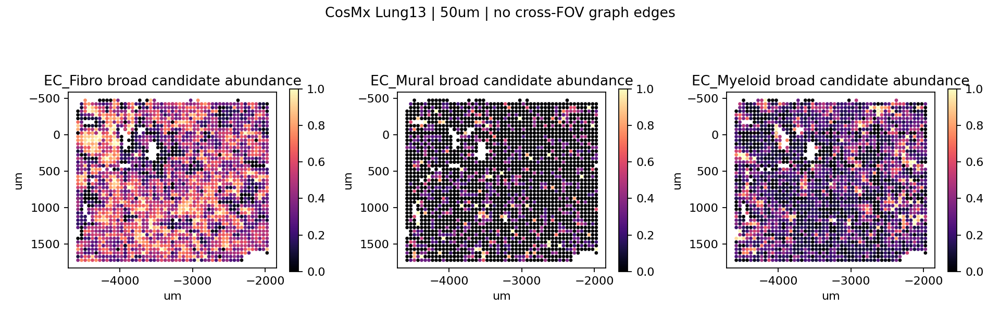

2026-11-15｜WEHI R4 / CoVarNet K15
本页仅包含已完成的成像数据分析。四张Visium的完整R4参考解卷积仍在运行，不在本页宣称完成。
六张乳腺Xenium 5k的ACKR1–PI16在100μm网格呈弱正相关（Spearman约0.01–0.20）。这表示区域RNA密度共变，不等同于精确细胞亚型丰度或细胞接触；前一轮细胞级条件邻近检验仍为阴性。
CM12的ESM1–RGS5在六张乳腺切片呈正相关，但ESM1–FOLR2关系不一致，不能将两节点的支持扩展为完整三节点生态位。CM04作为动脉–平滑肌对照一并展示。
肾癌低面板Xenium及两份肺癌CosMx缺少部分核心marker，精确核心投射标为不可测。CosMx另外定义大类血管候选，关联总体较弱；这不是CM01/12/04复现。
乳腺Xenium使用原生RNA计数，100/200μm网格，每格至少10个QC细胞；marker计数除以网格原生RNA总量。核心活动保留原R4的对应节点W权重，缺测不填零；图中每个面板以自身p99缩放。60邻居反平方行归一化双变量Moran描述空间聚集。全部坐标及RNA总量与原生文件逐细胞一致，144个随机网格独立从原始RNA复算通过。
| section | cm | missing | status | retained_W_fraction |
|---|---|---|---|---|
| breast_S01 | CM01 | NaN | core_marker_proxy_only | 0.766 |
| breast_S01 | CM12 | NaN | core_marker_proxy_only | 0.932 |
| breast_S01 | CM04 | NaN | core_marker_proxy_only | 0.739 |
| breast_S02 | CM01 | NaN | core_marker_proxy_only | 0.766 |
| breast_S02 | CM12 | NaN | core_marker_proxy_only | 0.932 |
| breast_S02 | CM04 | NaN | core_marker_proxy_only | 0.739 |
| breast_S03 | CM01 | NaN | core_marker_proxy_only | 0.766 |
| breast_S03 | CM12 | NaN | core_marker_proxy_only | 0.932 |
| breast_S03 | CM04 | NaN | core_marker_proxy_only | 0.739 |
| breast_S04 | CM01 | NaN | core_marker_proxy_only | 0.766 |
| breast_S04 | CM12 | NaN | core_marker_proxy_only | 0.932 |
| breast_S04 | CM04 | NaN | core_marker_proxy_only | 0.739 |
| breast_S05 | CM01 | NaN | core_marker_proxy_only | 0.766 |
| breast_S05 | CM12 | NaN | core_marker_proxy_only | 0.932 |
| breast_S05 | CM04 | NaN | core_marker_proxy_only | 0.739 |
| breast_S06 | CM01 | NaN | core_marker_proxy_only | 0.766 |
| breast_S06 | CM12 | NaN | core_marker_proxy_only | 0.932 |
| breast_S06 | CM04 | NaN | core_marker_proxy_only | 0.739 |
| renal_Xenium | CM01 | PI16 | unmeasured_core_markers | 0.766 |
| renal_Xenium | CM12 | ESM1,FOLR2,RGS5 | unmeasured_core_markers | 0.932 |
| renal_Xenium | CM04 | GJA5 | unmeasured_core_markers | 0.739 |
| section | platform | grid_um | cm | a | b | n_grids | Spearman | Moran_forward | Moran_reverse | interpretation |
|---|---|---|---|---|---|---|---|---|---|---|
| breast_S01 | Xenium_5k | 100 | CM01 | Endo_venous_ACKR1 | Str_Fib_PI16 | 8306 | 0.196 | 0.148 | 0.136 | marker_density_not_cell_abundance_or_contact |
| breast_S01 | Xenium_5k | 100 | CM12 | Endo_tip_ESM1 | Str_Pericyte_RGS5 | 8306 | 0.295 | -0.0044 | -0.00542 | marker_density_not_cell_abundance_or_contact |
| breast_S01 | Xenium_5k | 100 | CM12 | Endo_tip_ESM1 | Mye_Mac_FOLR2 | 8306 | -0.11 | -0.0564 | -0.0577 | marker_density_not_cell_abundance_or_contact |
| breast_S01 | Xenium_5k | 100 | CM12 | Str_Pericyte_RGS5 | Mye_Mac_FOLR2 | 8306 | 0.0237 | 0.0386 | 0.0346 | marker_density_not_cell_abundance_or_contact |
| breast_S01 | Xenium_5k | 100 | CM04 | Endo_arterial_GJA5 | Str_SMC_MYH11 | 8306 | 0.2 | 0.103 | 0.102 | marker_density_not_cell_abundance_or_contact |
| breast_S02 | Xenium_5k | 100 | CM01 | Endo_venous_ACKR1 | Str_Fib_PI16 | 5118 | 0.123 | 0.0667 | 0.063 | marker_density_not_cell_abundance_or_contact |
| breast_S02 | Xenium_5k | 100 | CM12 | Endo_tip_ESM1 | Str_Pericyte_RGS5 | 5118 | 0.29 | 0.0487 | 0.0485 | marker_density_not_cell_abundance_or_contact |
| breast_S02 | Xenium_5k | 100 | CM12 | Endo_tip_ESM1 | Mye_Mac_FOLR2 | 5118 | -0.0798 | -0.0478 | -0.0483 | marker_density_not_cell_abundance_or_contact |
| breast_S02 | Xenium_5k | 100 | CM12 | Str_Pericyte_RGS5 | Mye_Mac_FOLR2 | 5118 | -0.0669 | -0.0383 | -0.0412 | marker_density_not_cell_abundance_or_contact |
| breast_S02 | Xenium_5k | 100 | CM04 | Endo_arterial_GJA5 | Str_SMC_MYH11 | 5118 | 0.182 | 0.0932 | 0.0912 | marker_density_not_cell_abundance_or_contact |
| breast_S03 | Xenium_5k | 100 | CM01 | Endo_venous_ACKR1 | Str_Fib_PI16 | 7205 | 0.0116 | 0.0341 | 0.0368 | marker_density_not_cell_abundance_or_contact |
| breast_S03 | Xenium_5k | 100 | CM12 | Endo_tip_ESM1 | Str_Pericyte_RGS5 | 7205 | 0.193 | 0.0331 | 0.033 | marker_density_not_cell_abundance_or_contact |
| breast_S03 | Xenium_5k | 100 | CM12 | Endo_tip_ESM1 | Mye_Mac_FOLR2 | 7205 | -0.049 | -0.0294 | -0.0312 | marker_density_not_cell_abundance_or_contact |
| breast_S03 | Xenium_5k | 100 | CM12 | Str_Pericyte_RGS5 | Mye_Mac_FOLR2 | 7205 | -0.0071 | 0.00413 | 0.00344 | marker_density_not_cell_abundance_or_contact |
| breast_S03 | Xenium_5k | 100 | CM04 | Endo_arterial_GJA5 | Str_SMC_MYH11 | 7205 | 0.152 | 0.114 | 0.116 | marker_density_not_cell_abundance_or_contact |
| breast_S04 | Xenium_5k | 100 | CM01 | Endo_venous_ACKR1 | Str_Fib_PI16 | 6145 | 0.116 | 0.0424 | 0.0403 | marker_density_not_cell_abundance_or_contact |
| breast_S04 | Xenium_5k | 100 | CM12 | Endo_tip_ESM1 | Str_Pericyte_RGS5 | 6145 | 0.276 | 0.0301 | 0.0296 | marker_density_not_cell_abundance_or_contact |
| breast_S04 | Xenium_5k | 100 | CM12 | Endo_tip_ESM1 | Mye_Mac_FOLR2 | 6145 | 0.131 | -0.00454 | -0.00525 | marker_density_not_cell_abundance_or_contact |
| breast_S04 | Xenium_5k | 100 | CM12 | Str_Pericyte_RGS5 | Mye_Mac_FOLR2 | 6145 | 0.154 | 0.0678 | 0.0664 | marker_density_not_cell_abundance_or_contact |
| breast_S04 | Xenium_5k | 100 | CM04 | Endo_arterial_GJA5 | Str_SMC_MYH11 | 6145 | 0.0394 | 0.117 | 0.118 | marker_density_not_cell_abundance_or_contact |
| breast_S05 | Xenium_5k | 100 | CM01 | Endo_venous_ACKR1 | Str_Fib_PI16 | 7721 | 0.11 | 0.073 | 0.073 | marker_density_not_cell_abundance_or_contact |
| breast_S05 | Xenium_5k | 100 | CM12 | Endo_tip_ESM1 | Str_Pericyte_RGS5 | 7721 | 0.132 | 0.137 | 0.137 | marker_density_not_cell_abundance_or_contact |
| breast_S05 | Xenium_5k | 100 | CM12 | Endo_tip_ESM1 | Mye_Mac_FOLR2 | 7721 | -0.0736 | 0.00948 | 0.00917 | marker_density_not_cell_abundance_or_contact |
| breast_S05 | Xenium_5k | 100 | CM12 | Str_Pericyte_RGS5 | Mye_Mac_FOLR2 | 7721 | 0.122 | 0.0531 | 0.0529 | marker_density_not_cell_abundance_or_contact |
| breast_S05 | Xenium_5k | 100 | CM04 | Endo_arterial_GJA5 | Str_SMC_MYH11 | 7721 | 0.163 | 0.0947 | 0.0945 | marker_density_not_cell_abundance_or_contact |
| breast_S06 | Xenium_5k | 100 | CM01 | Endo_venous_ACKR1 | Str_Fib_PI16 | 9399 | 0.106 | 0.0648 | 0.0703 | marker_density_not_cell_abundance_or_contact |
| breast_S06 | Xenium_5k | 100 | CM12 | Endo_tip_ESM1 | Str_Pericyte_RGS5 | 9399 | 0.344 | 0.0356 | 0.0334 | marker_density_not_cell_abundance_or_contact |
| breast_S06 | Xenium_5k | 100 | CM12 | Endo_tip_ESM1 | Mye_Mac_FOLR2 | 9399 | 0.0318 | -0.0212 | -0.0234 | marker_density_not_cell_abundance_or_contact |
| breast_S06 | Xenium_5k | 100 | CM12 | Str_Pericyte_RGS5 | Mye_Mac_FOLR2 | 9399 | 0.123 | 0.0635 | 0.0608 | marker_density_not_cell_abundance_or_contact |
| breast_S06 | Xenium_5k | 100 | CM04 | Endo_arterial_GJA5 | Str_SMC_MYH11 | 9399 | 0.134 | 0.0942 | 0.0954 | marker_density_not_cell_abundance_or_contact |
| section | platform | grid_um | cm | a | b | n_grids | Spearman | Moran_forward | Moran_reverse | interpretation |
|---|---|---|---|---|---|---|---|---|---|---|
| breast_S01 | Xenium_5k | 200 | CM01 | Endo_venous_ACKR1 | Str_Fib_PI16 | 2407 | 0.291 | 0.137 | 0.131 | marker_density_not_cell_abundance_or_contact |
| breast_S01 | Xenium_5k | 200 | CM12 | Endo_tip_ESM1 | Str_Pericyte_RGS5 | 2407 | 0.225 | -0.0116 | -0.013 | marker_density_not_cell_abundance_or_contact |
| breast_S01 | Xenium_5k | 200 | CM12 | Endo_tip_ESM1 | Mye_Mac_FOLR2 | 2407 | -0.227 | -0.133 | -0.135 | marker_density_not_cell_abundance_or_contact |
| breast_S01 | Xenium_5k | 200 | CM12 | Str_Pericyte_RGS5 | Mye_Mac_FOLR2 | 2407 | 0.0964 | 0.0479 | 0.0401 | marker_density_not_cell_abundance_or_contact |
| breast_S01 | Xenium_5k | 200 | CM04 | Endo_arterial_GJA5 | Str_SMC_MYH11 | 2407 | 0.286 | 0.0783 | 0.0778 | marker_density_not_cell_abundance_or_contact |
| breast_S02 | Xenium_5k | 200 | CM01 | Endo_venous_ACKR1 | Str_Fib_PI16 | 1904 | 0.207 | 0.0463 | 0.0493 | marker_density_not_cell_abundance_or_contact |
| breast_S02 | Xenium_5k | 200 | CM12 | Endo_tip_ESM1 | Str_Pericyte_RGS5 | 1904 | 0.378 | 0.0662 | 0.0642 | marker_density_not_cell_abundance_or_contact |
| breast_S02 | Xenium_5k | 200 | CM12 | Endo_tip_ESM1 | Mye_Mac_FOLR2 | 1904 | -0.343 | -0.103 | -0.104 | marker_density_not_cell_abundance_or_contact |
| breast_S02 | Xenium_5k | 200 | CM12 | Str_Pericyte_RGS5 | Mye_Mac_FOLR2 | 1904 | -0.264 | -0.0695 | -0.0724 | marker_density_not_cell_abundance_or_contact |
| breast_S02 | Xenium_5k | 200 | CM04 | Endo_arterial_GJA5 | Str_SMC_MYH11 | 1904 | 0.375 | 0.0495 | 0.0406 | marker_density_not_cell_abundance_or_contact |
| breast_S03 | Xenium_5k | 200 | CM01 | Endo_venous_ACKR1 | Str_Fib_PI16 | 2644 | 0.0275 | -0.00883 | -0.00881 | marker_density_not_cell_abundance_or_contact |
| breast_S03 | Xenium_5k | 200 | CM12 | Endo_tip_ESM1 | Str_Pericyte_RGS5 | 2644 | 0.24 | 0.0102 | 0.00885 | marker_density_not_cell_abundance_or_contact |
| breast_S03 | Xenium_5k | 200 | CM12 | Endo_tip_ESM1 | Mye_Mac_FOLR2 | 2644 | -0.148 | -0.0734 | -0.0745 | marker_density_not_cell_abundance_or_contact |
| breast_S03 | Xenium_5k | 200 | CM12 | Str_Pericyte_RGS5 | Mye_Mac_FOLR2 | 2644 | -0.0627 | -0.0119 | -0.0125 | marker_density_not_cell_abundance_or_contact |
| breast_S03 | Xenium_5k | 200 | CM04 | Endo_arterial_GJA5 | Str_SMC_MYH11 | 2644 | 0.202 | 0.0585 | 0.0582 | marker_density_not_cell_abundance_or_contact |
| breast_S04 | Xenium_5k | 200 | CM01 | Endo_venous_ACKR1 | Str_Fib_PI16 | 1709 | 0.274 | 0.0907 | 0.0864 | marker_density_not_cell_abundance_or_contact |
| breast_S04 | Xenium_5k | 200 | CM12 | Endo_tip_ESM1 | Str_Pericyte_RGS5 | 1709 | 0.41 | 0.0178 | 0.0191 | marker_density_not_cell_abundance_or_contact |
| breast_S04 | Xenium_5k | 200 | CM12 | Endo_tip_ESM1 | Mye_Mac_FOLR2 | 1709 | 0.156 | -0.0341 | -0.0333 | marker_density_not_cell_abundance_or_contact |
| breast_S04 | Xenium_5k | 200 | CM12 | Str_Pericyte_RGS5 | Mye_Mac_FOLR2 | 1709 | 0.291 | 0.0843 | 0.0863 | marker_density_not_cell_abundance_or_contact |
| breast_S04 | Xenium_5k | 200 | CM04 | Endo_arterial_GJA5 | Str_SMC_MYH11 | 1709 | 0.0902 | 0.09 | 0.0937 | marker_density_not_cell_abundance_or_contact |
| breast_S05 | Xenium_5k | 200 | CM01 | Endo_venous_ACKR1 | Str_Fib_PI16 | 2364 | 0.283 | 0.104 | 0.106 | marker_density_not_cell_abundance_or_contact |
| breast_S05 | Xenium_5k | 200 | CM12 | Endo_tip_ESM1 | Str_Pericyte_RGS5 | 2364 | 0.229 | 0.228 | 0.229 | marker_density_not_cell_abundance_or_contact |
| breast_S05 | Xenium_5k | 200 | CM12 | Endo_tip_ESM1 | Mye_Mac_FOLR2 | 2364 | -0.167 | -0.00542 | -0.00639 | marker_density_not_cell_abundance_or_contact |
| breast_S05 | Xenium_5k | 200 | CM12 | Str_Pericyte_RGS5 | Mye_Mac_FOLR2 | 2364 | 0.192 | 0.0492 | 0.0452 | marker_density_not_cell_abundance_or_contact |
| breast_S05 | Xenium_5k | 200 | CM04 | Endo_arterial_GJA5 | Str_SMC_MYH11 | 2364 | 0.311 | 0.0626 | 0.0639 | marker_density_not_cell_abundance_or_contact |
| breast_S06 | Xenium_5k | 200 | CM01 | Endo_venous_ACKR1 | Str_Fib_PI16 | 2567 | 0.211 | 0.0938 | 0.0943 | marker_density_not_cell_abundance_or_contact |
| breast_S06 | Xenium_5k | 200 | CM12 | Endo_tip_ESM1 | Str_Pericyte_RGS5 | 2567 | 0.402 | 0.015 | 0.0118 | marker_density_not_cell_abundance_or_contact |
| breast_S06 | Xenium_5k | 200 | CM12 | Endo_tip_ESM1 | Mye_Mac_FOLR2 | 2567 | 0.0292 | -0.0293 | -0.0329 | marker_density_not_cell_abundance_or_contact |
| breast_S06 | Xenium_5k | 200 | CM12 | Str_Pericyte_RGS5 | Mye_Mac_FOLR2 | 2567 | 0.269 | 0.0936 | 0.0934 | marker_density_not_cell_abundance_or_contact |
| breast_S06 | Xenium_5k | 200 | CM04 | Endo_arterial_GJA5 | Str_SMC_MYH11 | 2567 | 0.256 | 0.0794 | 0.0815 | marker_density_not_cell_abundance_or_contact |






Lung12和Lung13按归档名预选。细胞联合键精确匹配，排除背景cell_ID=0及非基因列，RNA≥50且检出基因≥20。候选大类至少2个实测marker，排除多类重叠候选；网格内比例为特征，内皮和伙伴等权。25/50μm网格至少3个QC细胞，Moran仅在同一FOV且超过60格时计算；无跨FOV连边，不把FOV当独立患者。坐标采用制造商0.12028μm/px平台规范，属于平台标定假设。比例构成和候选身份筛选均可能影响相关，不据负相关推断细胞排斥。
| sample | grid_um | cm | a | b | n_FOVs | n_estimable_Spearman | median_Spearman | n_estimable_Moran | median_Moran_forward | median_Moran_reverse |
|---|---|---|---|---|---|---|---|---|---|---|
| Lung12 | 25 | EC_Fibro | Blood_EC | Fibroblast | 28 | 28 | -0.117 | 28 | -0.01 | -0.00849 |
| Lung12 | 25 | EC_Mural | Blood_EC | Mural | 28 | 28 | 0.00038 | 28 | -0.00185 | -0.00407 |
| Lung12 | 25 | EC_Myeloid | Blood_EC | Myeloid | 28 | 28 | -0.0226 | 28 | 0.00394 | 0.00343 |
| Lung12 | 50 | EC_Fibro | Blood_EC | Fibroblast | 28 | 28 | -0.0933 | 28 | -0.00678 | -0.00739 |
| Lung12 | 50 | EC_Mural | Blood_EC | Mural | 28 | 28 | 0.0315 | 28 | 0.00074 | -0.0016 |
| Lung12 | 50 | EC_Myeloid | Blood_EC | Myeloid | 28 | 28 | -0.00199 | 28 | 0.00631 | 0.00707 |
| Lung13 | 25 | EC_Fibro | Blood_EC | Fibroblast | 20 | 20 | -0.016 | 20 | 0.0113 | 0.0129 |
| Lung13 | 25 | EC_Mural | Blood_EC | Mural | 20 | 20 | 0.0284 | 20 | -0.00233 | -0.00242 |
| Lung13 | 25 | EC_Myeloid | Blood_EC | Myeloid | 20 | 20 | -0.0279 | 20 | -0.0121 | -0.0121 |
| Lung13 | 50 | EC_Fibro | Blood_EC | Fibroblast | 20 | 20 | -0.0046 | 20 | 0.0181 | 0.0175 |
| Lung13 | 50 | EC_Mural | Blood_EC | Mural | 20 | 20 | 0.019 | 20 | 0.00359 | 0.00293 |
| Lung13 | 50 | EC_Myeloid | Blood_EC | Myeloid | 20 | 20 | -0.00959 | 20 | -0.0204 | -0.0225 |


逐细胞和网格数据留在服务器：
${PROJECT_ARCHIVE_ROOT}/spatial_CoVarNet_R4_20261115_v1方法参考：CoVarNet原文；本页采用成像marker密度代理和另列的大类候选，未宣称直接复现全部原网络或证明机制。